PERSONA: Personalized Whole-Body 3D Avatar with Pose-Driven Deformations from a Single Image(ICCV’25)
1단계 · 3DGS 기초
- 3DGS는 수백만 개의 명시적 3D 가우시안 + 미분가능 래스터화로, NeRF의 암시적 표현과 달리 실시간 고품질 렌더링과 편집성을 얻는다. #### 2단계 · SMPL-X
- SMPL-X는 몸·손·얼굴을 포즈·표정·형상 파라미터로 구동하는 전신 파라메트릭 메시로, 아바타를 ’애니메이터블’하게 만드는 뼈대다. #### 3단계 · 모노큘러 애니메이터블 3DGS
- 캐노니컬 가우시안 + 포즈 조건 변형(LBS·비강체 네트워크)이 영상 한 편으로 구동 가능한 아바타를 만드는 표준 레시피 — 단, 대개 최소 착의를 가정한다. #### 4단계 · ExAvatar (핵심 선행연구)
- ExAvatar는 SMPL-X 메시 토폴로지 위에 가우시안을 정점으로 얹는 하이브리드로, 짧은 영상만으로 표정·손까지 되는 전신 아바타를 만들지만 포즈 다양성 부족이 한계다. #### 5단계 · 디퓨전 인간 애니메이션
- MimicMotion 같은 이미지+포즈→영상 디퓨전은 포즈가 풍부한 영상을 생성하지만 정체성 보존이 약하다 — 이것이 PERSONA의 데이터원이자 balanced sampling이 필요한 이유다. #### 6단계 · PERSONA (본편)
- PERSONA는 3D 기반(정체성 강·변형 약)과 디퓨전(변형 강·정체성 약)의 장점을 결합해, 단일 이미지에서 디퓨전으로 포즈 영상을 만들고 SMPL-X/3DGS 아바타를 최적화하여 포즈 구동 옷 변형을 얻는다. #### 7단계 · 비교 대상 (LHM·AniGS)
- LHM·AniGS는 단일 이미지 3D 기반 SOTA지만 포즈 구동 옷 변형이 없다 — 바로 이 지점이 PERSONA가 이기는 축이다.
보너스 · 프레이밍 슬라이드 (분류)
- 옷·머리카락 “동역학” 연구는 모두 표현 축에서는 애니메이터블이며, 진짜 구분은 그 위에 얹힌 물리·시간 축을 얼마나 다루느냐다 — PERSONA는 준정적(포즈 조건부)에 위치한다. → 이 마지막 한 장을 관련연구 슬라이드로 쓰면 발표 전체가 하나의 축으로 꿰집니다.
3일 준비 to-do
Day 1 — 기초 다지기 (읽기 중심, 개념 위주로 빠르게)
3DGS(Kerbl et al.) 핵심만: 가우시안 표현·미분가능 래스터화가 뭔지 개념 파악 (수식 깊이 X) — 40분
SMPL-X 훑기: 포즈·표정 파라미터, LBS 스키닝 개념 — 30분
모노큘러 애니메이터블 3DGS 한 편(3DGS-Avatar 또는 GaussianAvatar) 읽기 — 60분
1~3단계 “한 문장 요점”을 자기 말로 다시 써서 메모 — 20분
Day 2 — 핵심 논문 정복 (읽기 + 구조화)
- ExAvatar 정독: 하이브리드 표현·연결성 정규화·손실함수 — PERSONA 이해의 열쇠 — 70분
- MimicMotion/디퓨전 애니메이션 원리 훑기: 왜 정체성 드리프트가 생기나 — 30분
- PERSONA 1차 정독: 문제정의 → 방법(디퓨전 영상 생성, SMPL-X/3DGS 최적화, balanced sampling, Sobel seam 처리) → 실험 → 한계 — 90분
- LHM·AniGS는 “비교 포인트”만 확인 (옷 변형 유무) — 20분
- 축 분류(애니메이터블 / 물리 / 시간) 표로 정리 — 20분
Day 3 — 슬라이드 제작 + 리허설
- 발표 골격 잡기: 문제 → 관련연구(분류 슬라이드) → 방법 → 실험 → 한계 → 토론 — 40분
- 각 단계 “한 문장 요점”을 슬라이드 헤드라인으로 배치 — 30분
- PERSONA 핵심 figure 정리: 파이프라인, balanced sampling ablation, ExAvatar/LHM/디퓨전 대비 비교 — 40분
- 한계·토론 슬라이드 작성: “PERSONA는 준정적, 물리 동역학·secondary motion은 미해결 → 후속 연구” — 30분
- 리허설 1~2회 + 예상 질문 답변 준비 — 40분
예상 질문 미리 준비 (Q&A 슬라이드 백업)
balanced sampling을 빼면 뭐가 나빠지나? (정체성 드리프트 — ablation으로 답)
ExAvatar와 결정적 차이는? (영상 다수 필요 → 단일 이미지 + 디퓨전 생성 영상)
옷 변형이 “물리적으로” 맞나? (아니오 — 포즈 조건부 준정적, 관성·secondary motion은 없음)
OOD(학습 분포 밖) 포즈에서는? (일반화 한계 — 정직하게 인정하고 후속 방향으로)
3D Gaussian Splatting for Real-Time Radiance Field Rendering
1. 정의, 문제의식
- 장면을 수백만 개의 3D 가우시안(작은 반투명 타원체)의 집합으로 명시적으로 표현
- 이를 미분가능한 래스터화로 렌더링해 학습하는 신규 뷰 합성 방법
- 겨냥한 상대는 NeRF, 장면을 MLP로 표현해서 광선마다 다른 수십~수백 개 점을 샘프링해 적분하다 보니 렌더링, 학습이 느림.
- Mip-NeRF360급 품질을 유지하면서 학습은 수 분~1시간 내로, 렌더링은 1080p에서 실시간으로 하는 것
- 핵심 아이디어는 암시적 MLP질의를 명시적 프리미티브 래스터화로 바꾼 것
2. 표현 - 3D 가우시안 프리미티브
- 각 가우시간은 네가지 파라미터를 가짐
- \(G(x) = e^{-\frac{1}{2}(x)^T\sum^{-1}(x)}\)
- 위치(평균) \(\mu \in \mathbb{R}^3\)
- Covariance \(\sum\) \(\rightarrow\) 비등방성(anisotropic)이라 타원체가 방향에 따라 능어날 수 있음, 이게 표면을 적은 수의 프리미티브로 효율적으로 근사하는 비결
- 최적화 중 \(\sum\)가 항상 양의 준정부호여야 하는데 그냥 6개 값을 직접 학습하면 제약이 깨짐
- \(\sum\)을 스케일 S(3D벡터)와 회전R(쿼터니언)로 분해해서 \(\sum = RSS^TR^T\)로 파라미터화
- \(\rightarrow\) 물리적으로 타원체의 축 길이와 방향을 학습하는 셈이라 제약이 자동으로 지켜짐
- 불투명도(Opacity) \(\alpha\)
- color SH : 상수가 아닌 구면 조화함수(Spherical Harmonics)로 저장해서, 보는 방향에 따라 색이 달라지는 view-dependent 효과(반사,광택)을 표현
- 초기화는 COLMAP같은 SfM(Structure-from-Motion)이 카메라 보정 과정에서 뱉어내는 희소 점군에서 시작, 각 점에 가우시안을 하나씩 심고 최적화로 늘려감
전체 파이프라인
- SfM초기화(COLMAP점군) \(\rightarrow\) 3D 가우시안(\(\mu, \sum, \alpha,\) SH) \(\rightarrow\) 래스터화(투영 + 블렌딩) \(\rightarrow\) 손실,역전파(L1 + D-SSIM)
3. 렌더링: 미분가능 타일
- 논문의 기술 핵심이자 실시간 성능의 열쇠
- 먼저 각 3D가우시안을 카메라 시점의 2D화면으로 투영
- 3D 공분산 \(\sum\)을 2D로 옮길 때 투영변환이 비선형이라, 그 아빈 근사의 야코비안 J를 써서 \(\sum' = JW\sum W^TJ^T\)로 2D공분산을 구함(W는 뷰 변환) - EWA splatting에서 온 방식
- 그 다음 화면을 16x16 타일로 나누고, 각 타일에서 겹치는 가우시안들을 깊이 순으로 정렬한 뒤 앞에서 뒤로 알파블렌딩함.
- 픽셀 색 \(C = \sum_ic_i\alpha_i\Pi_j <_i(1-\alpha_j)\)은 NeRF의 볼륨 렌더링과 같은 아파 합성 수식
- 하지만 광선을 따라 샘플을 적분하는 대신 정렬된 이산 프리미티브를 블렌딩한다는 점이 다름. 타일 단위 정렬 + GPU병렬화 덕분에 광선마다 MLP를 수십 번 질의하던 NeRF와 달리 실시간이 가능
- 중요한 것은 래스터화 전체가 미분가능, 렌더 결과의 오차를 각 가우시안의 위치, 공분산, 불투명도, SH로 그대로 역전파할 수 있다는 것
- 논문에서는 임의 개수의 가우시안이 겹쳐도 되는 빠른 역방향 패스를 설계
4. 최적화: 손실 + 적응적 밀도 제어
- 손실은 렌더 이미지와 실제 학습 이미지 사이의 L1에 D-SSIM을 섞음: \(L = (1-\lambda)L_1 + \lambda L_{D-SSIM}\) \(\rightarrow\)이걸로 모든 가우시안 파라미터를 경사하강으로 최적화
- 위치만 옮겨선 부족, 처음에 SfM점이 희소해서 세밀한 영역을 못채움, 그래서 논문의 두 번째 핵심 기여인 적응적 밀도 제어(adaptive density control)가 주기적(100iteration)으로 개입
- 가우시안이 부족한 under-reconstructed 영역 - 뷰공간 위치 그래디언트가 큰데 가우시안이 작은 경우에서는 가우시안을 복제 clone 해 그래디언트 방향으로 밀어넣음, 만대로 하나의 큰 가우시안이 넓은 영영을 뭉개고 있는 over-reconstructed 경우에는 둘로 분할 split하고, 새 위치는 원래 가우시안 확률분포로 삼아 샘플링
- 동시에 불투명도가 임계값 아래로 떨어진 가우시안은 제거 prune해 메모리를 아끼고, 주기적으로 불투명도를 리셋해 카메라 근처에 낀 floater를 걸러냄. 보통 3만 iteration
5. 결과와 한계
- 성능은 Mip-NeRF360급 품질(PSNR/SSIM/LPIPS)를 유지하면서 학습은 수 분~수십 분, 렌더링은 1080p 실시간을 달성함
- 한계는 관측이 적은 영역에서는 아티팩트, floater가 생기고, 시점 이동 시 popping이 나타날 수 있음
- 수백만 개의 가우시안을 저장하다 보니 메모리 발자국이 NeRF보다 큰 편이고, SfM 초기화 품질에 민감함
- 명시적 표면(Mesh)가 아니라 점 집합이라, 기하를 직접 쓰려면 추가 처리가 필요함 \(\rightarrow\) Avatar
6. PERSONA로 가는 연결고리
- 이 슬라이드가 필요한 이유: 3DGS는 명시적이고 미분 가능하며 프리미티브 단위로 편집가능한 표현
- ExAvatar가 각 가우시안을 SMPL-X메시의 정점에 묶고, PERSONA가 그 위에서 포즈 구동 변형을 학습할 수 있는 토대
Expressive Body Capture: 3D Hands, Face, and Body from a Single Image(CVPR’19)
1.
- 몸(SMPL) + 손(MANO) + 얼굴(FLAME)을 하나로 합친 전신 파라메트릭 메시 모델.
- 10,475개의 vertex, 54개의 joint를 가짐
- 몇 개의 저차원 파라미터만으로 사람의 형상과 자세, 표정을 생성 및 구동할 수 있음
2. 핵심 파라미터 3가지
- 형상 \(\beta\)(shape): 사람의 체형, 정체성. 체형 공간의 PCA 계수
- 포즈 \(\theta\)(pose): 관절별 회전(축-각 표현). 몸 관절 + 턱 + 눈 + 양손 손가락까지 포함해서 전신 자세를 결정
- 표정 \(ψ\)(expression): 열굴 표정. FLAME의 표정 기저 계수.
- \(\rightarrow\) mesh M(\(\beta, \theta, ψ\))
3. LBS 스키닝
- 템플릿에 blend shape를 더해 T-pose상태의 개인화된 메시를 만듦: \(\bar{T}\) + \(B_s(\beta)\) + \(B_E(ψ)\) + \(B_P(\theta)\)
- \(B_s(\beta)\): shape blend shape
- \(B_E(ψ)\): expression blend shape
- \(B_P(\theta)\): pose blend shape
- Linear Blend Skinning,LBS: mesh를 실제 포즈처럼 구부림
- 작 정점은 근처 관절들의 변환에 얼마나 영향을 받는지를 나타내는 스키닝 가중치 W를 가짐
- 정점의 최종 위치 = 관절 변환들을 스키닝 가중치로 가중평균한 것
- 즉 팔꿈치 근처 정점은 벼 변환의 영향을 크게 받아 같이 움직임
- 순수 LBS는 관절이 심하게 꺾일 때 부피가 쭈그러드는 candy-wrapper가 생기는데 이를 보정하는 게 pose blend shape
- Avatar에 LBS스키닝 쓰는 이유: 포즈 \(\theta\)만 바꾸면 메시 전체가 자연스럽게 그 자세로 움직임
- 핵심: SMPL-X는 몸·손·얼굴을 형상 β·포즈 θ·표정 ψ 파라미터로 표현하고 LBS로 구동하는 전신 메시로, 가우시안 아바타가 “포즈로 움직이는” 뼈대를 제공
3DGS-Avatar: Animatable Avatars via Deformable 3D Gaussian Splatting(CVPR’24)
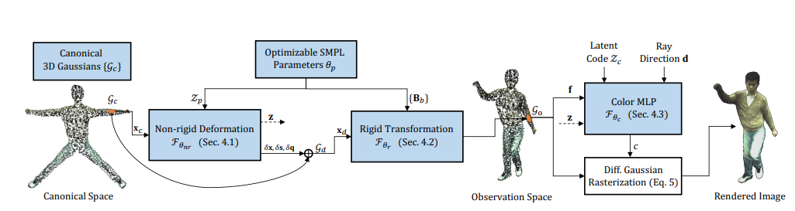
- monocular 영상 하나에서, canonical 공간의 3D 가우시안을 포즈 조건 변형 + LBS로 구동해 옷 입은 애니메이터블 아바타를 만드는 방법, 30분 학습, 50+ FPS
1.파이프라인
- 초기화: canonical SMPL mesh 표면에 점을 샘플링해 canonical 가우시안을 배치
- 비강체 변형: 각 canonical 가우시안을 인코딩된 포즈 벡터로 조건화된 비강체 변형 MLP에 통과 \(\rightarrow\) 포즈에 따라 달라지는 옷 주름 등 비강체 변형을 표현
- 관측 공간으로: 변형된 가우시안을 학습된 스키닝 가중치의 순방향LBS로 실제 포즈 공간에 배치 \(\rightarrow\) 렌더링
2. 핵심 설계
역방향 스키닝을 피함: inverse(역방향) 스키닝은 계산이 어렵고 해가 여러개일 수 있음, 캐노니컬 공간에서 스키닝 필드만 학습. 덕분에 보지 못한 포즈로의 일반화가 좋아짐
등거리 정규화(as-isometric-as-possible): 명시적 표현이라는 점을 활용해 가우시안의 평균과 공분산에 국소 거리를 보존하는 정규화를 걸어, 관절이 심하게 꺾인 OOD포즈에서 일반화를 강화함
핵심: 3DGS-Avatar는 캐노니컬 가우시안 + 포즈 조건 비강체 변형 + 순방향 LBS로 모노큘러 영상에서 구동 가능한 아바타를 만들며, 등거리 정규화로 보지 못한 포즈까지 일반화한다
SMPL-X가 포즈 θ와 LBS라는 “구동 문법”을 제공하고, 3DGS-Avatar가 그 문법을 그대로 소비함 — 포즈로 가우시안을 변형하고 LBS로 자세를 잡음. 그리고 3DGS-Avatar의 등거리 정규화는 ExAvatar의 연결성 정규화와 같은 발상
용어 정리
- 캐노니컬 공간(정규 자세, 보통 T/대(大)-포즈에서 정의된 기준 공간)
- 관측 공간(실제 촬영/목표 포즈 공간)
- 스키닝 가중치(정점/가우시안이 각 뼈에 받는 영향도)
- 비강체 변형(뼈 회전으로 설명 안 되는 옷·살의 변형)
- 블렌드셰이프(형상/표정/포즈에 따라 템플릿에 더해지는 변위).
Expressive Whole-Body 3D Gaussian Avatar(ECCV’24)
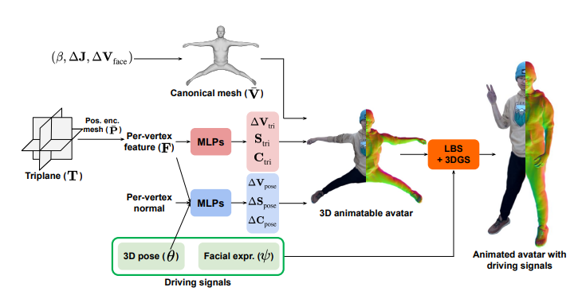
- monocular 영상 하나로 3D 스캔 같은 3D 관측 없이 표현력 있는 전신 3D 아바타를 만드는 방법
- SMPL-X의 전신 구동성과 3DGS의 포토리얼, 실시간 렌더링을 결합한 하이브리드
1. 문제의식
1) 영상 속 표정과 포즈의 다양성이 제한적임
- 30초짜리 짧은 영상에는 다양한 표정, 자세가 안담기니, 학습에 없었던 새로운 표정, 포즈로 애니메이션하는 게 비자명함
2) 3D스캔이나 RGBD같은 3D관측이 없음.
- 3D정보 없이 2D영상으로만 배우면 영상에서 한번도 안 보인 신체 부위는 애매해져 새로운 동장에서 아티팩트가 발생
두 문제 다 하이브리드 표현으로 해결
2. 하이브리드 표현(가우시안 = 메시 정점)
- 각 3D 가우시안을 표면 위의 정점(vertex)로 취급하고, SMPL-X메시에서 토폴로지를 따르는 미리 정의된 연결 정보를 vertex사이에 부여
- 즉 3DGS를 점 구름이 아니라 메시처럼 다룸
- 기존 3DGS는 가우시안들이 서로 아무 연결이 없는데, Exavatar는 SMPL-X와 똑같은 삼각형 연결망을 가우시안에 씌워버림
3. 이득 두 가지
1) 표정 구동성
- 가우시안이 SMPL-X와 같은 토폴로지를 공유하므로 ExAvatar가 SMPL-X의 표정 공관과 완전히 호환됨.
- 결과적으로 다양한 표정이 담기지 않은 짧은 모노큘러 영상만으로 SMPL-X의 어떤 표정 코드로든 구동 가능
- 이전 연구들과 달리 표정 구동성이 학습 프레임 수에 엄격히 제한되지 않음
2) 아티팩트 감소
- Laplacian 정규화와 새로운 face loss같은 연결성 기반 정규화로 새로운 표정, 포즈에서의 아티팩트를 크게 줄임.
4. 연결성 정규화
- 포즈 다양성이 부족해 영상에 안 보인 부위가 생기고, 3D 관측이 없으면 그런 애매한 부위가 새 포즈에서 아티팩트로 나타남
- 기존에도 점 기반 정규화가 있었지만, 이들은 정점 사이의 연결성을 고려하지 않아 floating 3D 가우시안이 생길 수 있음
- ExAvatar의 통찰은 연결성을 고려하면 국소 유사성(local similarity)를 자연스럽게 강제해 아티팩트를 크게 줄일 수 있음
1) Laplacian 정규화
- 하이브리드 표현 덕분에 표면 메시에 흔히 쓰는 Laplacian정규화를 가우시안에 적용할 수 있음
- splat위치ㅡ이 Laplacian과 대응하는 메시 정점의 laplacian 사이의 차이를 최소화하는 것
- 직관적으로 ’이웃과 너무 튀지 마라’는 국소적 매끄러움 제약
2) face loss
하이브리드 표현으로 얼굴의 기하(geometry)와 외형(appearance)사이의 일관성을 강제하는 새 손실
핵심: 이 “연결성 = 국소 일관성 → 일반화”라는 발상이 어제 본 3DGS-Avatar의 등거리(as-isometric) 정규화와 같은 계열. 둘 다 명시적 표현이라는 점을 활용해 국소 제약을 걸어 미관측/OOD 상황을 버팀
5. 파이프라인과 전처리
- 학습 전에 몸, 손, 얼굴을 SMPL-X모델로 공동 정합(co-register)함.
- 모노큘러 영상에서 전신 SMPL-X를 피팅해 각 프레임의 포즈, 표정, 형상을 얻는 단계로, 여기 품질이 전체 결과를 좌우함
- SMPL-X의 vertex가 약 1만개 뿐이라 포토리얼에는 부족한데, 이를 어떻게 업샘플링/세분화해 가우시안 수를 늘리는지
- 머리카락, 옷처럼 SMPL-X가 커버 못하는 부위가 가우시안이 메시에서 얼마나 벗어나도록 허용되는지(연결성 정규화가 그걸 어떻게 붇잡는지)
- 이 두가지가 메시에 묶되 완전히 종속시키지는 않는 균형의 핵심
6. 결과
- 여러 벤치마크에서 이전 3D 휴면 아바타들을 큰 폭으로 능가한다고 보고
- “짧은 폰 영상 → 새로운 표정·손·포즈 구동”이라는 정성 데모가 인상적이니, 프로젝트 페이지 영상을 캡처 후 ppt
7. PERSONA로 가는 연결
1) 계승
- ExAvatar의 SMPL-X + 3DGS 하이브리드 표현과 연결성 정규화를 그대로 물려받음
2) 남긴 것
ExAvatar는 표정 구동성 문제는 SMPL-X 표정 공간으로 우아하게 풀었지만, 포즈에 따른 옷의 비강체 변형은 여전히 학습 영상의 포즈 다양성에 묶여 있음
표정은 SMPL-X 파라메트릭 공간이 있어서 짧은 영상으로도 외삽되는데, “이 포즈일 때 옷이 이렇게 주름진다”는 데이터 기반이라 영상에 없으면 못 배움
이 빈칸을 PERSONa가 ’diffusion’으로 포즈 다양한 영상을 생성해서 채움
ExAvatar = “표정 다양성 부족을 표현(하이브리드)으로 해결” → PERSONA = “포즈/옷 변형 다양성 부족을 데이터(디퓨전 생성)로 해결”. ***
“가우시안을 메시 정점으로 취급한다”가 구체적으로 무엇을 부여하는 것이며, 왜 그게 표정 구동성으로 이어지는지 설명할 수 있나?
연결성 없는 점 기반 정규화(L2) 대비 Laplacian 정규화가 무엇을 더 해결하는지(floating Gaussian) 말할 수 있나?
두 도전 과제 각각이 방법의 어느 요소로 해결되는지 매핑할 수 있나? (표정 다양성 → 하이브리드/표정공간, 미관측 아티팩트 → 연결성 정규화)
ExAvatar가 잘 푼 것(표정)과 못 남긴 것(포즈 구동 옷 변형)을 구분하고, 후자가 왜 PERSONA로 이어지는지 한 문장으로 말할 수 있나?
MimicMotion: High-Quality Human Motion Video Generation with Confidence-aware Pose Guidance(ICML’25)
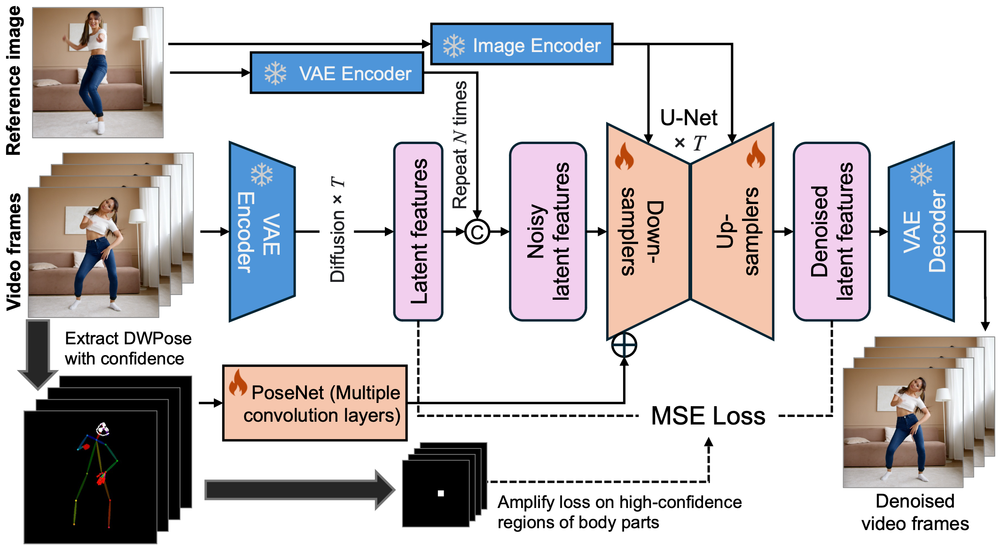
- 참조 이미지 한 장 + 포즈 시퀀스를 입력
- 그 사람이 그 포즈들을 수행하는 고품질 인간 동작 영상을 생성하는 포즈 가이드 비디오 디퓨전 모델
1. 작동 원리
- 잠재 공간에서 노이즈를 점진거으로 제거해 프레임들을 생성하되, 두개의 조건
- 정체성(참조이미즈 = 누구인가)
- 포즈 시퀀스(스켈레톤 = 어떤 자세인가)
- 기여
- 신뢰도 인식 포즈 가이드(confidence-aware pose guidance): 포즈 추정기가 뱉는 신뢰도 맵을 활용해, 확신이 높은 포즈 부위를 더 신뢰해 생성을 유도, 노이즈가 낀 포즈 추정에 강건해지고 프레임 품실, 시간적 매끄러움이 좋아짐
- 신뢰도 기반 시역 손실 증폭(regional loss anplification): 포즈 신뢰도에 따라 핵심 영역(특히 손)의 손실을 키워 이미지 왜곡을 줄임. 손이 잘 무너지는 문제를 겨냥한 장치
- 점진적 잠재 융합(progressive latent fusion): 겹치는 구간을 잠재 공간에 융합해, 임의 길이의 길고 매끄러운 영상을 합리적 자원으로 생성
2. 왜 정체성 드리프트가 생기나
- 정체성 드리프드(identity drift)는 생성된 프레임이 진행될수록, 또는 포즈가 참조에서 멀어질수록, 얼굴, 체형, 옷 디테일이 입력 인물에서 점점 벗어나는 현상
- 정체성 조건이 ’연성(soft)’제약: 참조 이미지는 크로스 어텐션, 이미지 임베딩 등으로 생성에 주입되지만,픽셀 단위로 정체성을 강제하는 hard 제약이 아님. 모델을 참조를 참고할 뿐, 매 프레임을 노이즈에서 새로 그려내므로 세부는 매번 재합성(hallucinate)됨
- 모델의 사전지식이 ’평균적으로 그럴듯한 사람’으로 당김: 디퓨전은 대규모 인간 영상으로 학습 돼 ’자연스러운 사람’이라는 강한 프라이어를 가짐, 그래서 특정인의 고유 디테일(정확한 이목구비, 옷의 로고, 패턴)은 학습 분포의 평균쪽으로 미끄러지기 쉬움
- 포즈가 참조에서 멀수록 ’지어내야할 영역’이 커짐: 참조가 정면인데 목표가 뒷모습이면, 참조가 안알려준 부분을 모델이 상상해야함. 상상한 내용은 정체성 앵커가 약해 원인물과 어긋나기 쉬움
- 시간적 오차 누적: 긴 영상은 구간을 이어붙이는데(점진적 잠재 융합), 각 구간이 앞 생성에 부분적으로 조건화되면 프레임, 구간이 쌓일수록 작은 오차가 복리로 누적됨
- 3D 일관성의 부재: 근본적으로 2D 프레임 합성임. 하나의 3D정체성에 여러 시점을 묶어두는 구조가 없어서, 서로 다른 포즈의 ’같은 사람’이 미묘하게 다르게 보이는 3D 비일관성이 생김
- 핵심: 포즈 가이드는 “몸이 어디 있는가”를 통제하지 “누구인가”를 강하게 붙잡지 못함. 그래서 포즈 다양성을 키울수록(=PERSONA가 원하는 것) 정체성은 더 흔들림
3. PERSONA와의 연결
- MimicMotion을 쓰는 이유는 ExAvatar가 못 가졌던 “포즈 다양성”을 공급받기 위해서임
- 참조 이미지 한 장으로 다양한 포즈의 영상을 생성하면 “이 포즈일 때 옷이 이렇게 변형된다”는 학습신호가 생김
- 하지만 생성 영상에서는 정체성 드리프트가 섞여있음
- 이걸 3D아바타 학습에 쓰면 드리프트가 아바타에 스며들어 입력 인물과 다른 얼굴이 나옴
- 해결방법
- Balanced sampling은 원본 입력 이미지(정체성의 정답 앵커)와 생성 프레임을 번갈아 학습해 청체성을 계속 원점으로 잡아당김
- Geometry-weighted optimization 처리는 생성 프레임의 경계 아티팩트가 구워지지 않게 막음
- 요약: MimicMotion은 포즈 다양성이라는 약을 주지만 정체성 드리프트라는 독을 함께 줌. PERSONA는 그 약을 취하고(포즈 영상 생성) 독을 해독하는(balanced sampling) 구조. 3D 표현이 정체성·3D 일관성을 지키고, 디퓨전이 변형 다양성을 공급하는 역할 분담이 여기서 완성됨. ***
- MimicMotion의 두 조건(정체성 / 포즈)이 각각 무엇이고, 출력이 무엇인지 한 문장으로 말할 수 있나?
- 정체성 드리프트의 원인 다섯 가지 중 최소 세 개(연성 조건, 평균으로의 회귀, 미관측부 상상, 시간 누적, 3D 비일관성)를 설명할 수 있나?
- “포즈 다양성을 키울수록 정체성이 흔들린다”는 트레이드오프를 말할 수 있나?
- 이 트레이드오프가 왜 PERSONA의 balanced sampling을 필연으로 만드는지 연결할 수 있나?
PERSONA: Personalized Whole-Body 3D Avatar with Pose-Driven Deformations from a Single Image(ICCV’25)
- 단일 이미지 안 장에서 포즈 구동 변형(pose-driven deformations)이 가능한 개인화 전신 3D아바타를 만드는 프레임워크
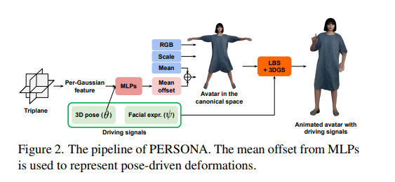
1. 문제 정의 - 두 접근의 딜레마
- 3D 기반 접근(NeRF/3DGS를 한 사람 영상에서 최적화). 정체성표현을 분리(idsentangled identity)해서 개인화, 정체성 보존이 강함. 하지만 옷의 비강체 변형 같은 포즈 구동 변형을 배우려면 포즈가 풍부한 영상이 다수 필요한데, 일상에서 그런 데이터를 개인마다 확보하는 건 비용이 크고 비현실적.
- Diffusion 기반 접근(대규모 in-the-wild 영상에서 학습). 포즈 구동 변형은 잘 배우지만, 정체성 보존이 약하고 포즈 의존 정체정 얽힘(pose-dependent identity entanglement)이 생김. - MimicMotion 에서의 drift
2. 핵심 아이디어
- 두 접근의 장점을 결합
- Diffusion으로 입력 이미지에서 포즈가 풍부한 영상을 생성하고, 그 영상들을 학습데이터 삼아 3D 아바타를 최적화.
- 이렇게 하면 개인별 대규모 촬영이 필요 없어져 파이프라인이 확장 가능(scalable)해짐.
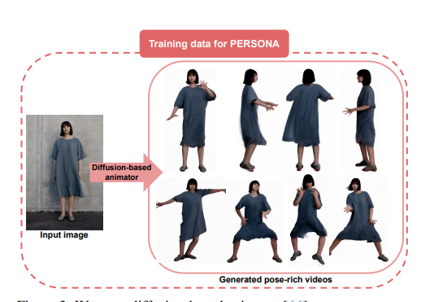
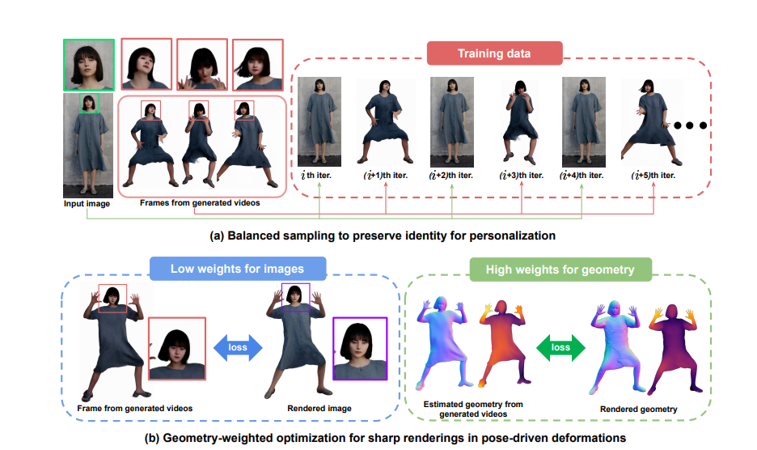
3. 두 가지 핵심 기술
- 다양한 포즈에서 높은 사실감(authenticity)과 선명한 렌더링(sharp renderings)을 보장하기 위한 장치
- Balanced sampling: 디퓨전 생성 학습 영상에는 정체성 변화(identity shifts)가 섞여있으므로, 입력 이미지를 과표집(oversampling)해 이 드리프트를 완화함. 즉 생성 프레임들 사이사이에 정답 정체성인 원본 이미지를 자주 끼워 넣어 정체성을 계속 원점으로 당기는 것
- Geometry-weighted optimization: 이미지 손실보다 기하 제약(geometry constraints)을 우선함. 핵심 논리는, 생성 프레임은 텍스처(색, 디테일)이 각 프레임마다 들쭉날쭉해도 기하(이진 마스크, 깊이 맵, 법선 맵, 부위 분할)은 상대적으로 안정적이라는 점. 그래서 기하를 비강체 변형의 신뢰할 수 있는 제약으로 삼아, 불안정한 텍스처에 휘둘리지 않고 다양한 포즈에서 렌더링 품질을 지킴
4. 두 가지 디테일
- 포즈 구동 변형 모델링에서 스케일 오프셋(scale offset)을 생략하면 블러가 줄어 다양한 포즈에서 선명함에 크게 기여(가우시안 크기를 포즈마다 바꾸지 않는 선택)
- PERSONA가 포즈 구동 변형을 명시적으로 모델링하기 때문에, 기존 방법들이 겪는 baked-in 아티팩트를 피함
- 기존 방법은 입력 이미지에 있는 변형을 그대로 구워 넣어, 새 포즈로 애니메이션하면 중력에 따라 자연스럽게 떨어져야 할 팔, 허벅지가 부자연스럽게 굽어 있거나, 긴 치마를 바지로 오인해 잘못 변형하는 문제 발생
- PERSONA는 입력 고유의 아티팩트를 물려받지 않고 새 포즈에 자연스럽게 반응함
5. 실험
- NeuMan 데이터셋 테스트셋에서 최신 기법들과 비교
- 핵심 정성 결과는 baked-in 아티팩트 비교
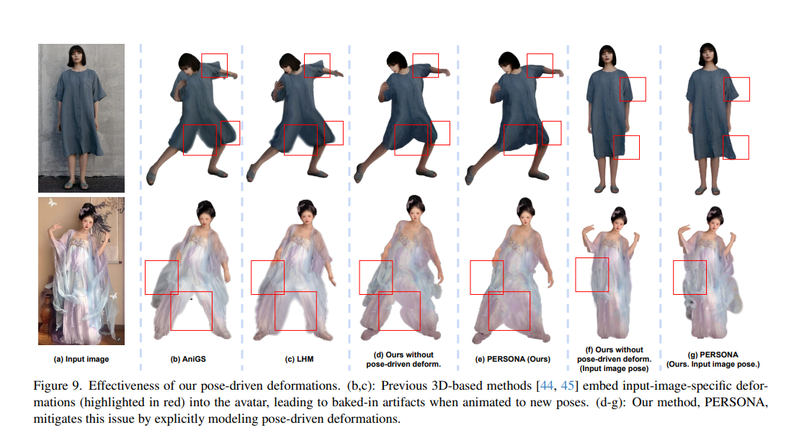
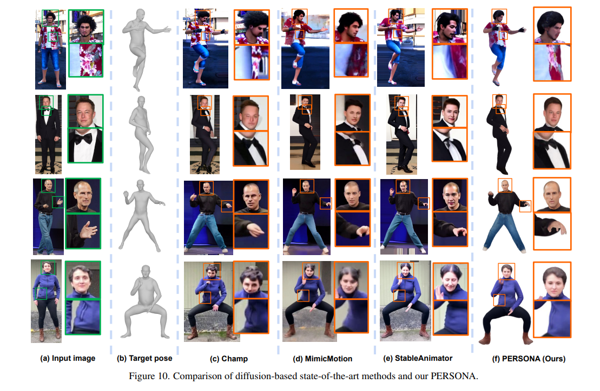

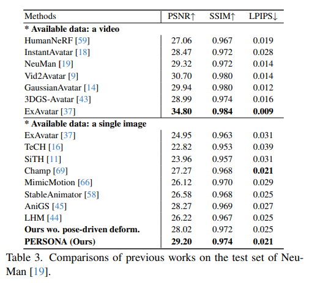
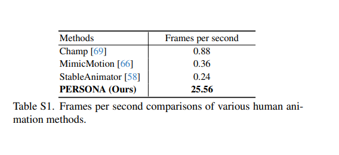
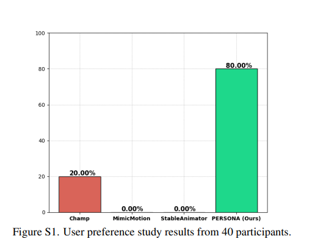
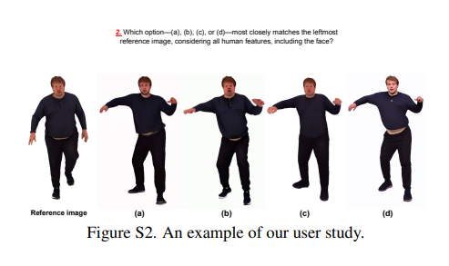
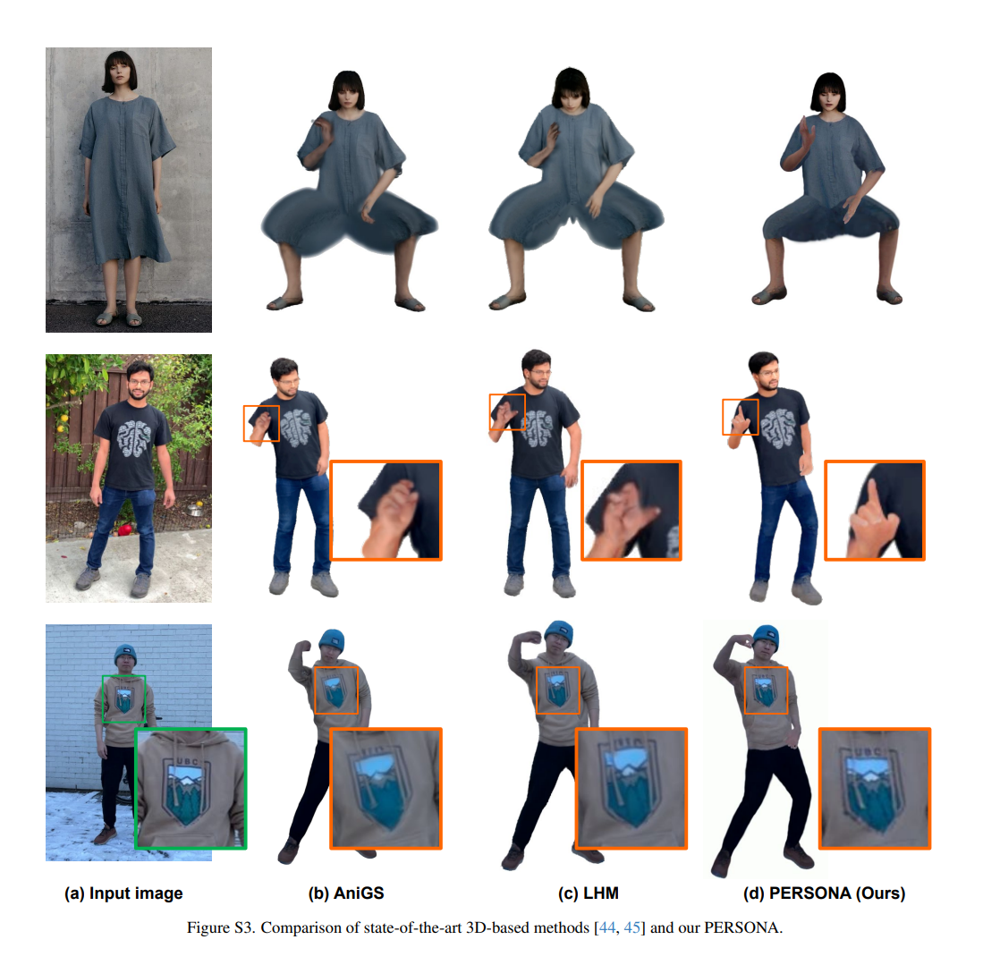
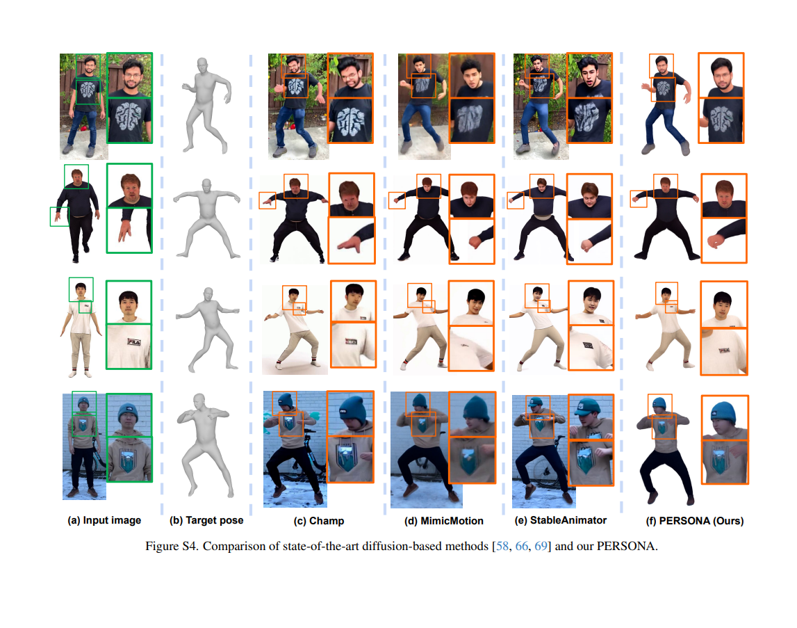
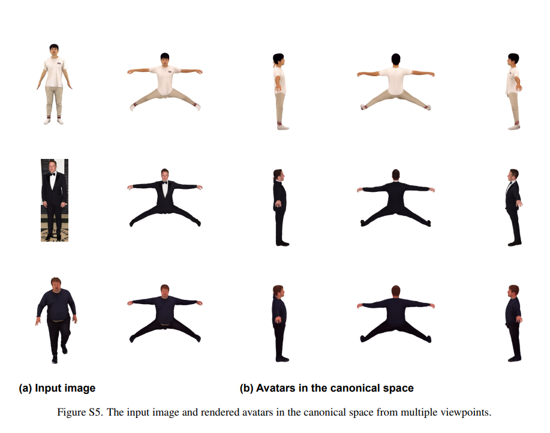
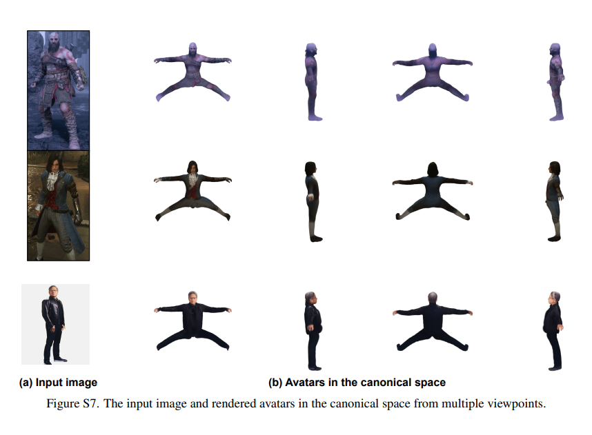
6. 한계
- PERSONA의 변형은 현재 포즈에 조건화된 준정적 변형이지, 관성&secondary motion같은 시간적 물리 동역학은 아님
- 학습 데이터가 생성물이라 디퓨전의 품질, 편향이 상한이 되고, 생성 영상의 포즈 분포 박(OOD)에서는 일반화가 제한됨 *** 3D 기반 vs 디퓨전 기반의 강·약점을 각각 두 개씩 말할 수 있나? (3D: 정체성↑/포즈변형 데이터비용↑, 디퓨전: 변형↑/정체성·얽힘↓) balanced sampling이 “무엇을, 왜” 과표집하는지 한 문장으로 설명할 수 있나? geometry-weighted optimization이 왜 이미지가 아니라 기하를 믿는지(텍스처 불안정 vs 기하 안정) 설명할 수 있나? baked-in 아티팩트가 무엇이고, PERSONA가 그걸 어떻게 피하는지(명시적 포즈 구동 변형) 예(중력·긴 치마)로 말할 수 있나? PERSONA의 준정적 한계가 어제 만든 “물리·시간 축”과 어떻게 연결되는지 말할 수 있나?
7. LHM·AniGS와의 비교
- 단일 이미지 → 애니메이터블 가우시안 아바타를 순전파로 만드는 예측형(feed-forward) 3D 기반 방법
1) LHM(ICCV’25)
- 멀티모달 트랜스포머로 인체 위치 특징과 이미지 특징을 인코딩해, 수 초 만에 3DGS 아바타를 추론
- 옷의 기하·텍스처 보존을 강조하고, 머리 영역은 feature pyramid로 정체성을 강화
- 옷 변형에 대해서는 diffused voxel skinning을 써서 다룸 but 스키닝 기반 변형이라 옷이 몸을 따라 움직이긴 하지만, 포즈에 따라 새로 주름지는 진짜 비강체 재드레이핑은 아님, 입력에서 본 옷 모양이 대체로 몸을 따라가는 방식
2) AniGS(CVPR’25)
생성 모델로 다중 뷰 캐노니컬 포즈 이미지(+ 법선 맵)을 만들어 재구성의 모호성을 줄이고, 이 불일치(inconsistent)이미지들을 다루려고 문제를 4D과제로 재정식화해 4D Gaussian Splatting으로 실시간 재구성
여기서 4D는 시간적 물리 동영학이 아니라 생성된 뷰들 사이의 불일치를 흡수하려는 모델링 트릭
핵심: LHM·AniGS는 예측형·단일이미지·정체성 보존·실시간이라는 강점을 갖지만, 포즈 구동 비강체 옷 변형은 본질적으로 스키닝/재구성에 기대어 입력 포즈의 변형이 baked-in됨
새 포즈에서 중력에 안 따르는 팔·다리, 긴 치마를 바지로 오인하는 아티팩트가 생김
PERSONA는 이 옷 변형을 명시적으로 학습해 이기는 것
정체성·속도·일반화는 LHM/AniGS, 포즈 구동 옷 변형의 품질은 PERSONA
8. 축 분류(애니메이터블/물리/시간)
| 방법 (venue) | 표현 축 | 물리 동역학 | 시간 의존 | 학습 방식 | 대상 · 입력 |
|---|---|---|---|---|---|
| 3DGS (SIGGRAPH’23) | 정적 | — | — | 최적화형(장면) | 일반 장면 · 멀티뷰 |
| SMPL-X (CVPR’19) | (구동 뼈대) | — | — | — | 몸+손+얼굴 파라메트릭 메시 |
| 3DGS-Avatar (CVPR’24) | 애니메이터블 | — | — | 최적화형(사람) | 몸 · 모노큘러 영상 |
| GaussianAvatar (CVPR’24) | 애니메이터블 | — | — | 최적화형(사람) | 몸 · 단일 영상 |
| ExAvatar (ECCV’24) | 애니메이터블 | — | — | 최적화형(사람) | 전신 · 짧은 영상 |
| LAM (SIGGRAPH’25) | 애니메이터블 | — | — | 예측형(원샷) | 얼굴 · 단일 이미지 |
| LHM (ICCV’25) | 애니메이터블 | —(스키닝만) | — | 예측형(원샷) | 전신 · 단일 이미지 |
| AniGS (CVPR’25) | 애니메이터블* | — | —(뷰불일치용 4D) | 예측형(원샷) | 전신 · 단일 이미지 |
| PERSONA (ICCV’25) | 애니메이터블(준정적) | — | —(포즈 조건부) | 최적화형+디퓨전 데이터 | 전신 · 단일 이미지 |
| RealityAvatar (’25) | 애니메이터블 | — | 있음(RNN 모션) | 최적화형 | 옷 · 영상 |
| Seq. Gaussian Avatars (ICCV’25) | 애니메이터블 | — | 있음(계층 모션) | 최적화형 | 몸 · 영상 |
| PBDyG / PICA / PGC (’24–’25) | 애니메이터블 | 있음(XPBD/시뮬) | 물리 경유최적화형 | 옷 · 영상 | |
| SimAvatar (CVPR’25) | 애니메이터블 | 있음(HOOD 시뮬) | 물리 경유최적화형 | 옷+머리카락 | |
| PhysGaussian (CVPR’24) | 장면+물리 | 있음 | 물리 경유최적화형(장면) | 물체·장면 | |
| 4D-GS / Deformable 3DGS (’23–’24) | 다이나믹/4D | — | 있음(시간 모델링) | 최적화형(장면) | 동적 장면 · 영상 |
| MimicMotion (ICML’25) | (2D 비디오 생성 도구) | — | 있음(영상) | 예측형 | 이미지+포즈 → 영상 |